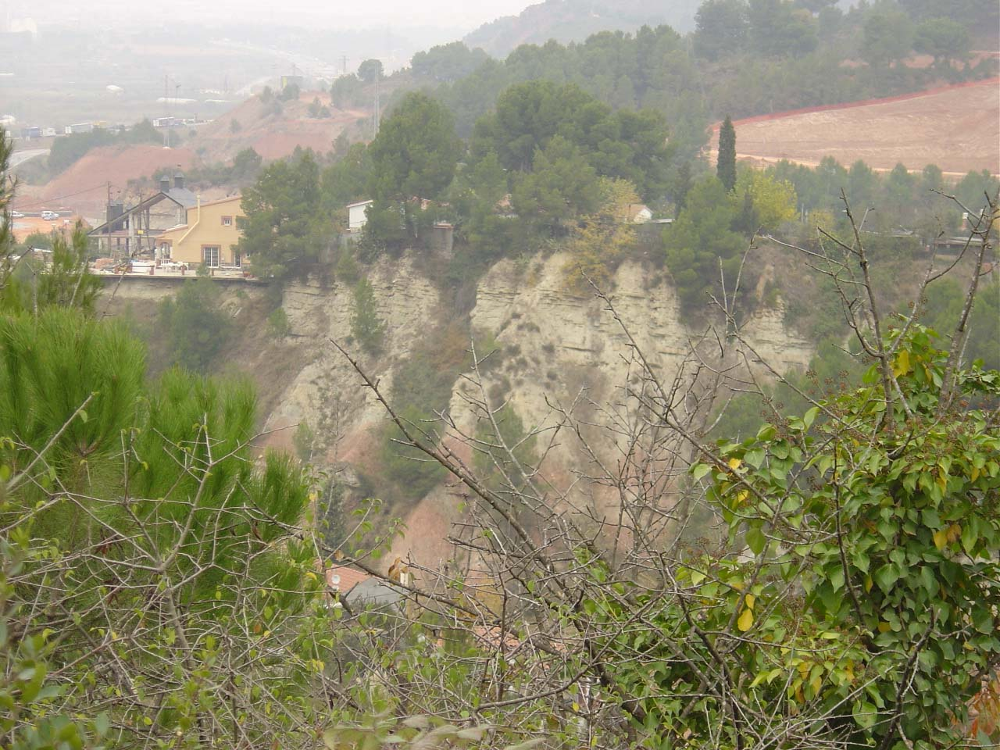
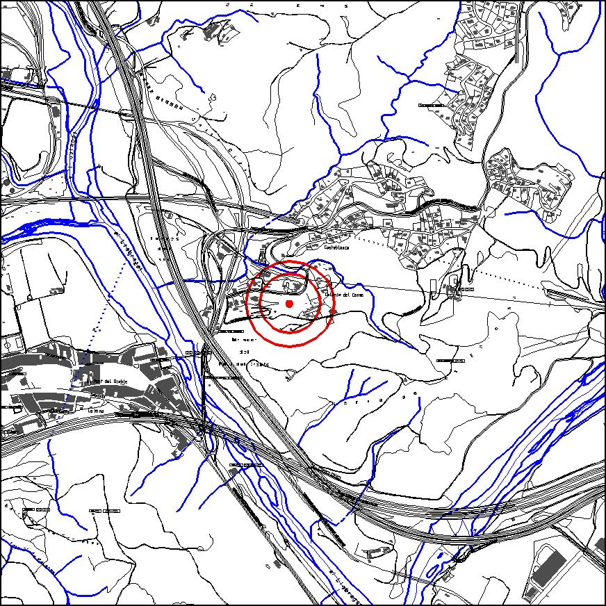

|  |  |
Nom de l’element: Successió Miocena de la Costablanca
Clau d’identificació: D.12
Nucli o indret: Barri de la Costablanca.
UTM: X= 411.745, Y= 4.592.409
Règim del sòl: sòl no urbanitzable.
Característiques:
Zona d’interès geològic i arqueològic on es produeix una alternança d’argiles vermelloses amb uns nivells de calcàries de color grisós formades en un llac de fa aproximadament 21 milions d’anys. S’hi ha trobat restes de mamífers i noves espècies de plantes (fòssils) com la Banksia martorellensis, la Protea i la Mimosa hispanica També s’hi ha trobat closques de tortuga fossilitzades. Cal assenyalar que la flora fòssil és la més completa del Miocè interior trobada a Catalunya (30 espècies diferents i 3 espècies noves).
1.2. Estat de conservació:
Amenaçat per les edificacions del barri de la Costablanca.
1.3. Ús actual:
Jaciment d’interès geològic, històric i natural.
1.4. Accés:
Accés fàcil pel barri de la Costablanca.
Jaciment geològic i natural molt important a nivell català, doncs acull la flora fòssil més completa de tot el Miocè inferior trobada a Catalunya.
3.1. Usos admesos:
Espais lliures.
3.2. Condicions d’ordenació:
Segons Pla Especial a redactar.
3.3. Accés
Barri de la Costablanca.
BPU (Bé Protegit Urbanísticament)